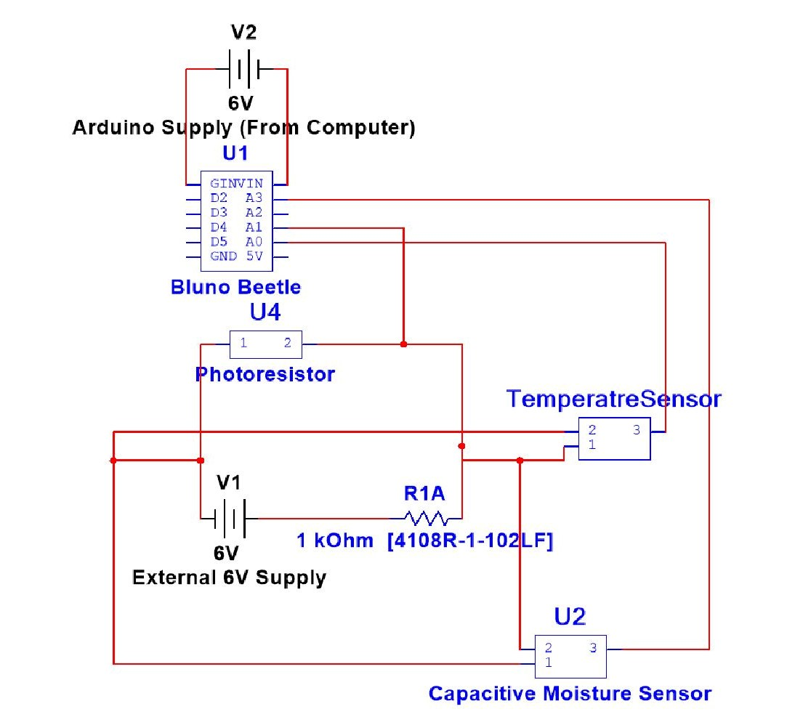

Hardware Engineering Projects
PlantStalk Sensor Module (2020)
Term project integrating a sensor module assessing the soil moisture, temperature and light of garden plants. We used the Arduino Bluno chip to gather data from temperature, light and capacitive soil moisture sensors. We then communicated with our Android app via bluetooth.
We were unable to 3D print our housing - but I have included a photo of our prototype below along with our circuit schematics:


Line Following Robot (2019)
Individual project designing and programming a line following robot to compete in a maze competition at the end of term. This robot used photoresistors to detect the difference between the black line and the white paper, in order to follow its path.